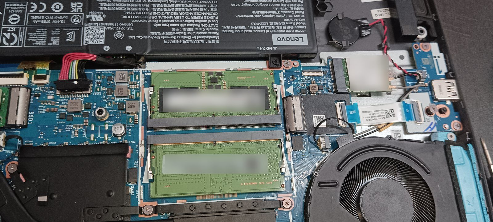
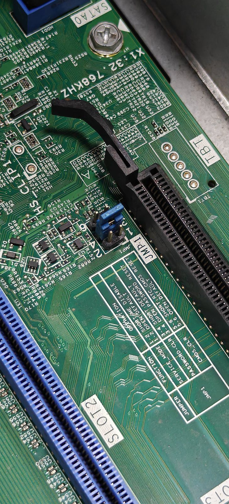

Home / Guides
ResourcesPractical advice on choosing, checking, upgrading and maintaining office computers, so your team spends its time working, not waiting.

What specs matter when buying laptops for accounts, admin and sales staff under ₹30,000: SSD, RAM, processor generation, Windows 11 Pro, warranty and GST billing.

When a refurbished business laptop is the smart choice for your team, when to buy new, and the checks to run on every refurbished unit, from a supplier of both.

i3 vs i5 vs Ryzen, processor generations, and how much RAM each role in your office needs in 2026: front desk, accounts, managers and design teams.

A 5-minute SSD health check for office PCs and refurbished laptops: free tools, what the numbers mean, and when to replace a drive before it fails and takes your data with it.

Use Windows' built-in battery report to see the real condition of your team's laptop batteries and plan replacements before they fail in a client meeting. No software needed.

Before replacing slow office computers, check whether an SSD and RAM upgrade will fix them, and when replacing is the smarter choice. On-site upgrades across Delhi NCR.

Which refurbished ThinkPad models suit office teams in 2026, which ones support Windows 11, and the checks to run on ex-corporate units before you buy.

When a refurbished server is the right choice for a small office (file sharing, Tally or ERP data, virtual machines), when a NAS is better, and what to check before you buy.
Don't let a slow PC slow down your team. Upgrades, IT support and AMC for businesses across Delhi NCR. WhatsApp us and we'll reply the same day.